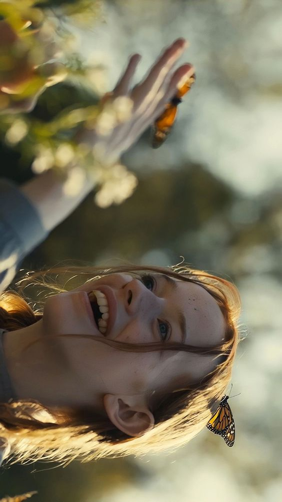
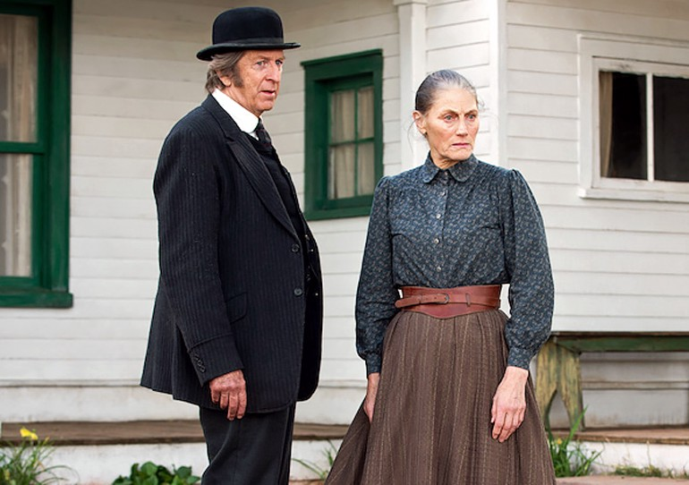
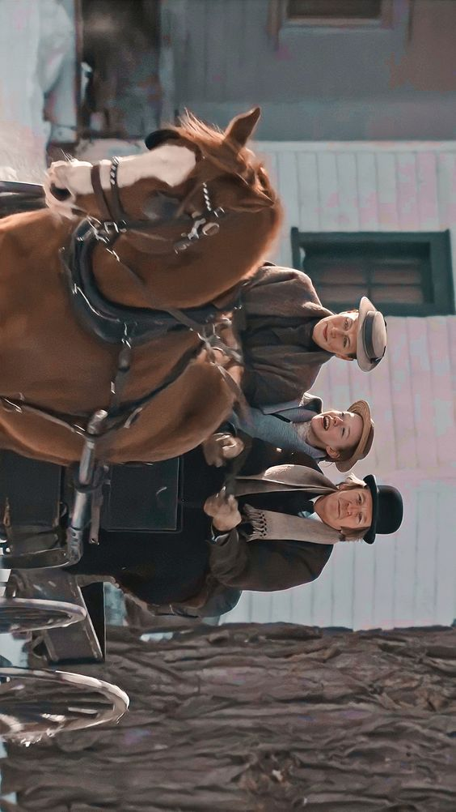

Anne with an E (inicialmente intitulada Anne por sua primeira temporada no Canadá) é uma série de televisão canadense vagamente adaptada daobra clássica de literatura infantil de Lucy Maud Montgomery de 1908 , Anne of Green Gables . Foi criado por Moira Walley-Beckett para a CBC e Netflix , e é estrelado por Amybeth McNulty como a órfã Anne Shirley , Geraldine James como Marilla Cuthbert, RH Thomson como Matthew Cuthbert, Dalila Bela como Diana Barry e Lucas Jade Zumann como Gilbert Blythe.
A série estreou em 19 de março de 2017 na CBC e em 12 de maio internacionalmente na Netflix. Foi renovada para uma segunda temporada em agosto de 2017 e para uma terceira temporada em agosto de 2018. Pouco depois do lançamento da terceira temporada em 2019, a CBC e a Netflix anunciaram que a série havia sido cancelada.
Anne with an E recebeu críticas positivas e ganhou o Canadian Screen Award de Melhor Série Dramática em 2017 e 2018. A série aborda uma série de questões como órfão, abandono de crianças, trauma psicológico , questões sociais como conformidade, desigualdade de gênero , racismo, religião, homossexualidade, bullying e liberdade de expressão.
Em 1896, o irmão e a irmã mais velhos Matthew e Marilla Cuthbert (que vivem juntos porque nunca se casaram) decidem adotar um menino órfão para ajudar na fazenda ancestral de Green Gables , nos arredores da cidade canadense de Avonlea , na Ilha do Príncipe Eduardo. . Quando Matthew vai buscar a criança na estação ferroviária, ele encontra Anne Shirley , de 13 anos, uma garota imaginativa, inteligente, espirituosa e falante. Anne ficou órfã quando seus pais morreram, quando ela tinha alguns meses de idade, e viveu como empregada em várias famílias antes de ser colocada em um orfanato.
Embora Matthew decida que gostaria que ela ficasse, Marilla não confia em Anne, dada sua condição de órfã desconhecida e a aparente inutilidade de uma jovem. Sua desconfiança aparece confirmada quando Marilla não consegue localizar um broche, levando-a a acreditar que Anne é uma ladra.
Os Cuthberts a mandam embora, "devolvendo-a" ao orfanato. Ao voltar ao orfanato, ela fica com medo de entrar, assombrada pelo bullying que sofreu lá, e volta para a estação de trem. Enquanto isso, Marilla descobre que o broche foi perdido e não roubado e essa descoberta a leva a entender que Anne não é uma ladra.
Conseqüentemente, Matthew encontra Anne e a convence a retornar para Green Gables, onde ela se torna oficialmente parte de sua família. No entanto, Anne continua a enfrentar bullying por parte dos alunos da escola de Avonlea e discriminação de classe por parte dos pais de Diana e outras pessoas da comunidade. Anne mais uma vez retorna e tenta ser aceita pelo resto de Avonlea, usando seus mecanismos de sobrevivência de inteligência, habilidades de resolução de problemas e imaginação.